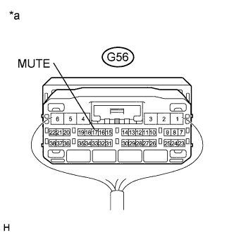
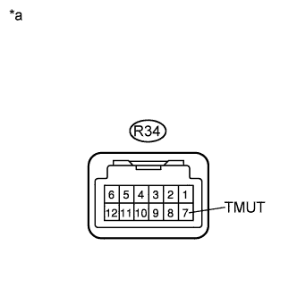

AUDIO AND VISUAL SYSTEM (w/ Multi-display) > Mute Signal Circuit between Stereo Component Amplifier and Telematics Transceiver |
| 1.INSPECT TELEMATICS TRANSCEIVER |
|  |
Measure the voltage according to the value(s) in the table below.
| Tester Connection | Condition | Specified Condition |
| G56-17 (MUTE) - Body ground | Engine switch on (ACC), audio system is playing → Emergency call mode | Higher than 3.5 V → Below 1 V |
| *a | Component with harness connected (Telematics Transceiver) |
|
| ||||
| OK | ||
| ||
| 2.CHECK HARNESS AND CONNECTOR (STEREO COMPONENT AMPLIFIER - TELEMATICS TRANSCEIVER) |
Disconnect the R34 stereo component amplifier assembly connector.
Disconnect the G56 telematics transceiver connector.
Measure the resistance according to the value(s) in the table below.
| Tester Connection | Condition | Specified Condition |
| R34-7 (TMUT) - G56-17 (MUTE) | Always | Below 1 Ω |
| R34-7 (TMUT) - Body ground | Always | 10 kΩ or higher |
|
| ||||
| OK | |
| 3.INSPECT STEREO COMPONENT AMPLIFIER ASSEMBLY |
|  |
Measure the voltage according to the value(s) in the table below.
| Tester Connection | Switch Condition | Specified Condition |
| R34-7 (TMUT) - Body ground | Engine switch on (ACC) | Higher than 3.5 V |
| *a | Component without harness connected (Stereo Component Amplifier Assembly) |
|
| ||||
| OK | ||
| ||